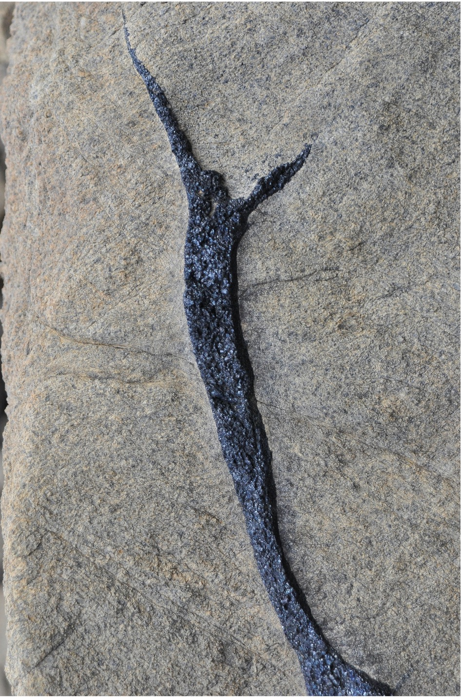

Layered intrusions are central to my current work on mafic-ultramafic systems, critical metals, and chromitite-bearing stratigraphy. I use these rocks to ask how large magma bodies differentiate, how mineral layers become organized, and how chromium, nickel, copper, and platinum-group elements are redistributed during the evolution of an intrusion. My research combines field relationships, petrography, whole-rock geochemistry, mineral chemistry, and thermodynamic modelling to test whether the textures and chemical patterns seen in layered sequences can be explained by simple fractional crystallization, repeated replenishment, crystal accumulation, or more complex open-system processes.

A recurring theme in this work is the tension between elegant textbook models and the much messier evidence preserved in real intrusions. Mineralized intervals often sit within sequences that record repeated chemical reversals, local disruption of layering, and mismatches between bulk composition and expected cumulate structure. Rather than treating these as noise, I use them as clues to magma chamber dynamics and ore formation. This is particularly relevant to chromitite-bearing layered intrusions, where petrogenesis, stratigraphy, and metal enrichment are closely linked. My aim is to understand layered intrusions not only as differentiated magma bodies, but as dynamic systems in which physical and chemical processes leave a stratigraphic record that can be read in detail and tested quantitatively.
